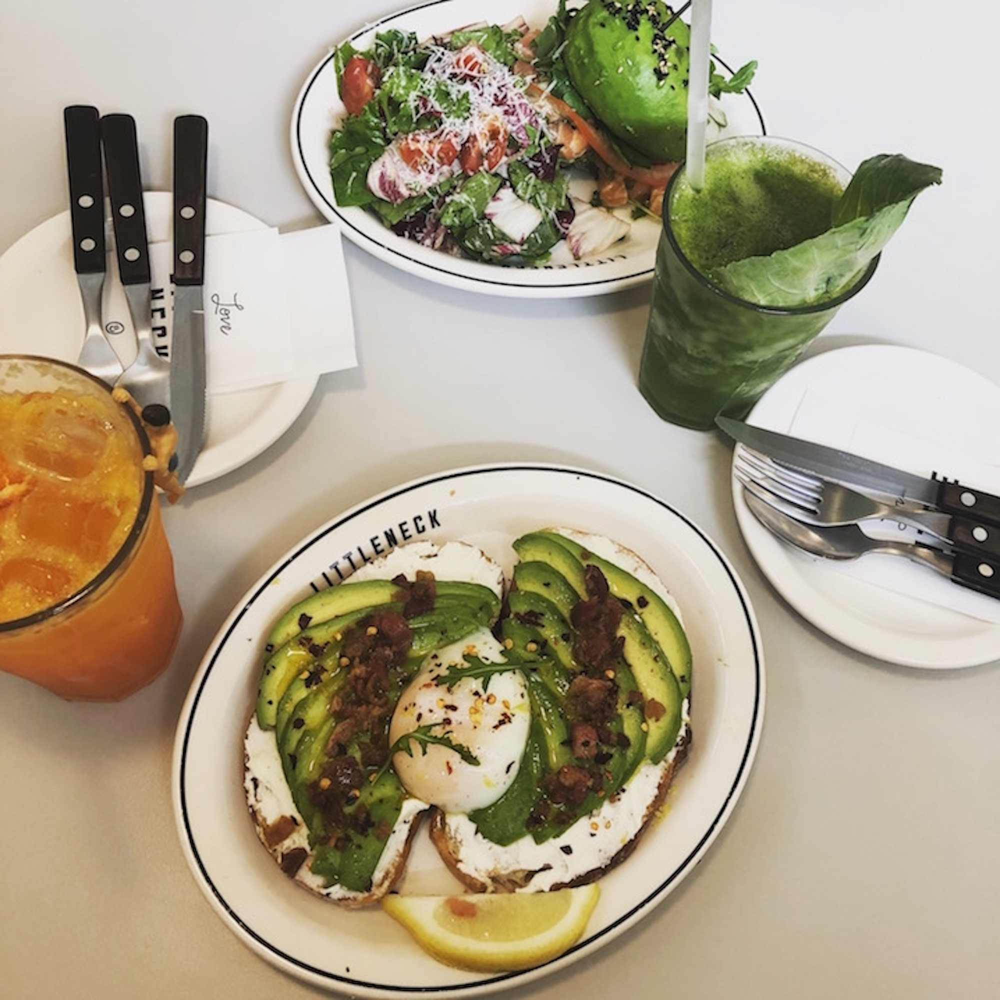
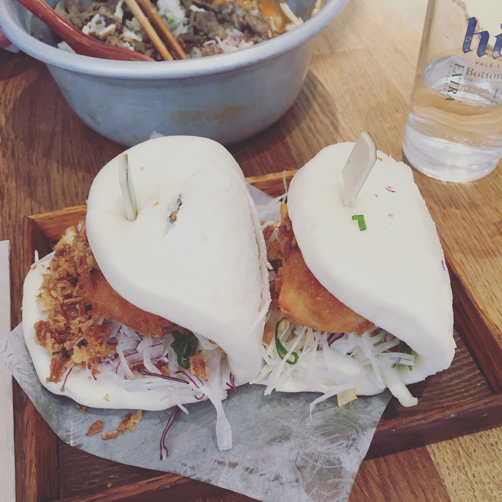

Things I love to do
Travel
I love to take pictures whilst travelling.
It helps me to capture the memories of the places I've been and people I've met.
 My kindergarten class and I on 'Hanbok day'
My kindergarten class and I on 'Hanbok day'- Sensoji Temple in Tokyo, Japan.
- The streets of Myeongdong shopping district in Seoul.
- Team Lab Borderless interative art museum, Japan.
- Signpost on Malapasqua island in the Phillipines.
Drawing
Ever since I was little I have loved to doodle and draw.
My favourite mediums are pencil or ball-point pen.
 Drawing of 'Chip', pencil.
Drawing of 'Chip', pencil.- Drawing of a lion, pencil.
- Drawing of a rhino, pencil.
- Cartoon drawing of 'Lilo and stitch', pen.
 Drawing of Walter White from 'Breaking Bad', pen.
Drawing of Walter White from 'Breaking Bad', pen.
Food
I guess some people wouldn't call this a hobby.
However I always love to research new places to eat and find hidden gems in new cities.
- Avocado toast at 'Little Neck', Seoul.
- French toast at 'Parnell Cafe', Seoul.
 Ramen from 'Ichiran ramen', Tokyo.
Ramen from 'Ichiran ramen', Tokyo.
- Bao buns from 'On the bab', London.
- Pancakes from 'Bill's restaurant', London.